Cyberstar
Defense agencies have to prove every person on their cyber team holds the right certifications. This is the dashboard their managers live in. I redesigned it end to end.
THE OUTCOME
Finding one person used to mean exporting the whole roster to a spreadsheet. Now it's one screen: who's failing, why, and what to do about it.
This is the real thing, running right here. Filter the list, switch between frameworks, sort by due date, click a name to open their record.
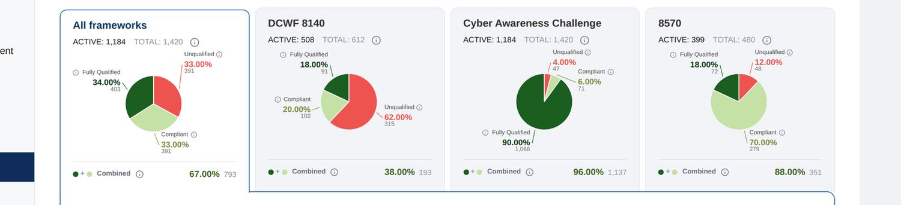
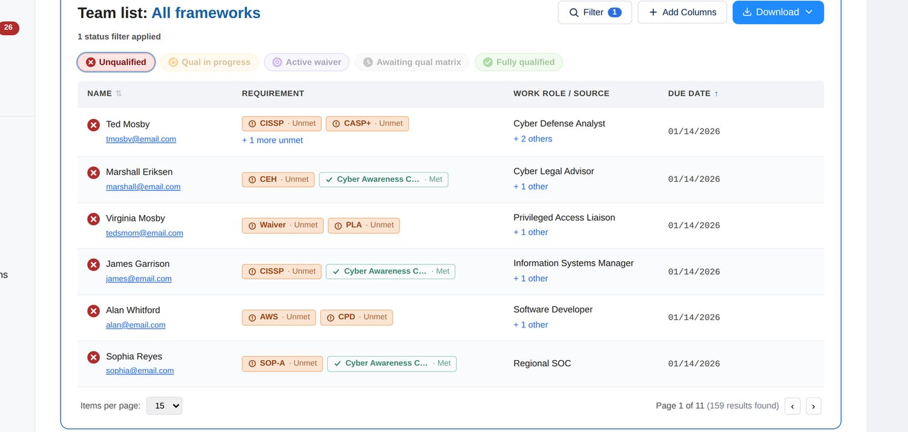
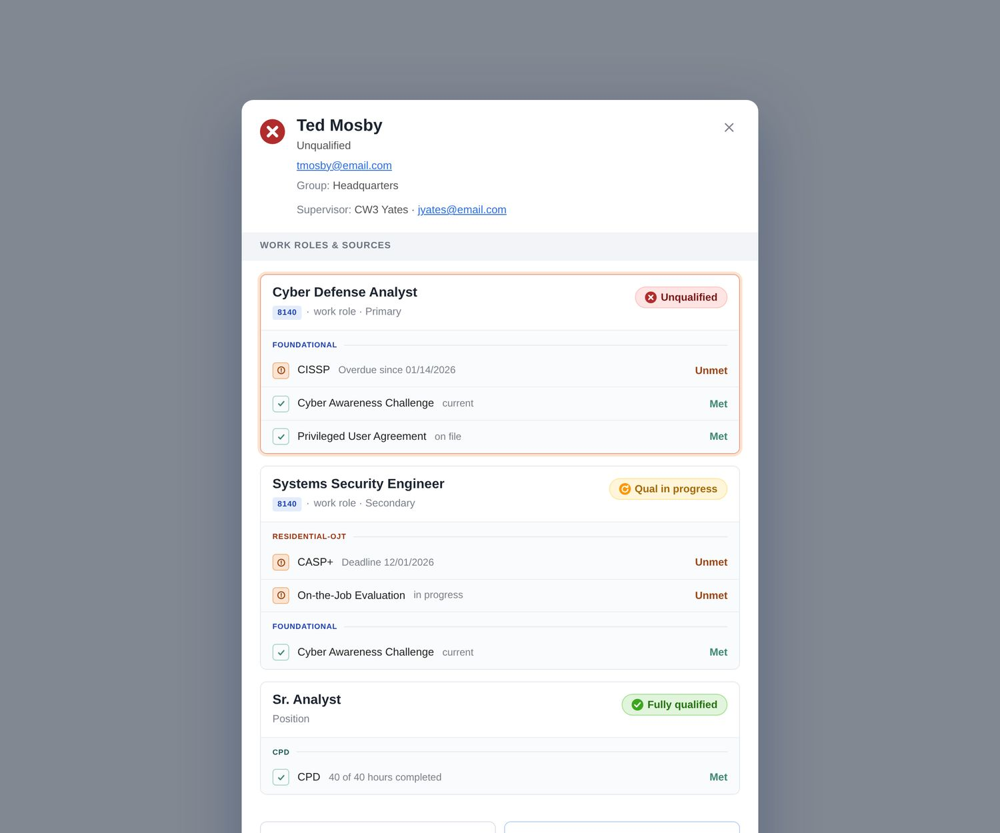
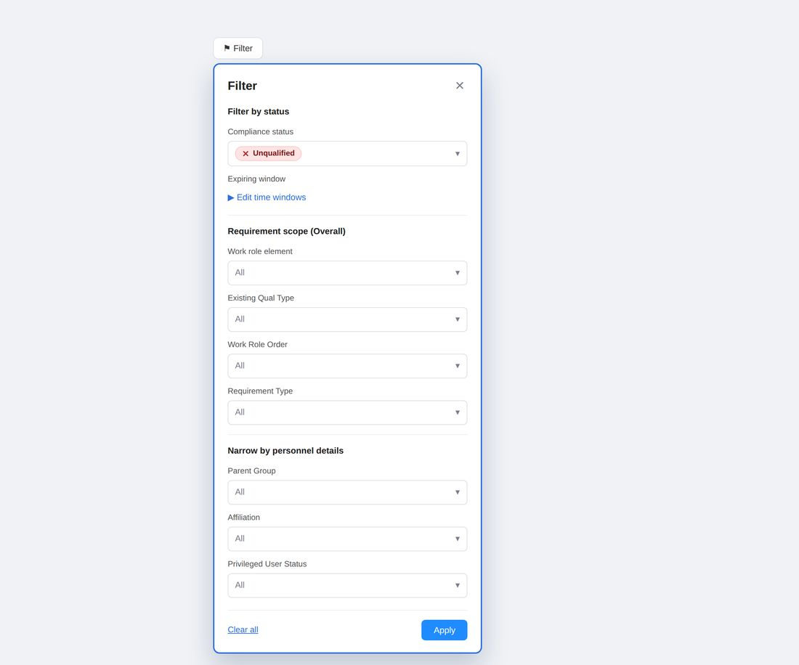
HOW I GOT THERE
Six steps, in the order they happened. Each one opens with the single thing that mattered most.
01 THE PROBLEM
The old dashboard gave you two numbers and no way to act on either one.
Cyberstar's software tracks whether people at defense agencies hold the certifications their jobs require. A compliance manager opens this screen to find out how their team is doing.
The old version told them how many people were compliant and how many weren't. That was it. If 135 people were failing, there was no way to find out which 135, why they were failing, or who to call about it. So managers exported everything to a spreadsheet and worked it out by hand.
The bigger the agency, the worse it got.
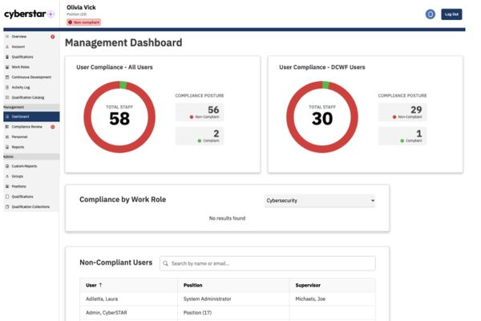
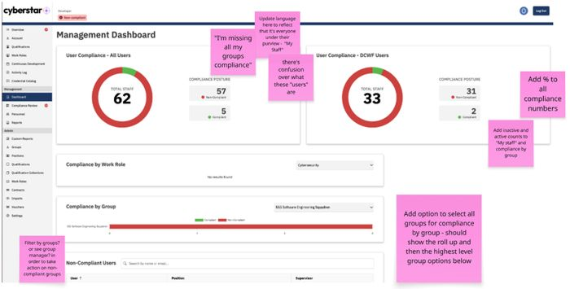
CLICK ANY IMAGE TO ENLARGE
02 RESEARCH
People weren't asking for a prettier dashboard. They were asking to stop doing the work by hand.
I interviewed compliance leads at several agencies, read through support tickets, checked which parts of the dashboard people actually opened, and sat with managers while they did a real compliance review.
“I've been sifting through spreadsheets for the last 4 years and it is absolutely 0 fun, because it becomes this gigantic mess of data. That's why the visual part of the dashboards is so helpful.”
DTRA COMPLIANCE LEAD“I don't want to know once they're expired. Viewing it after is less helpful, I can't take action to fix compliance the same way.”
ON WANTING WARNING BEFORE A DEADLINE, NOT AFTER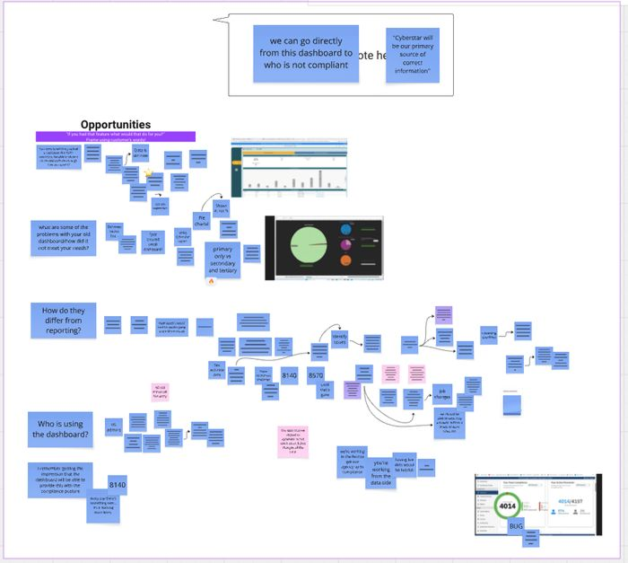
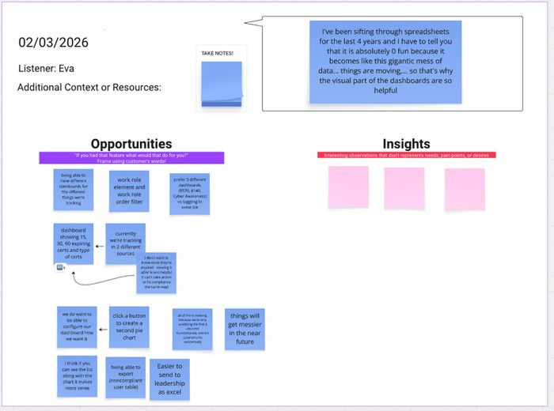
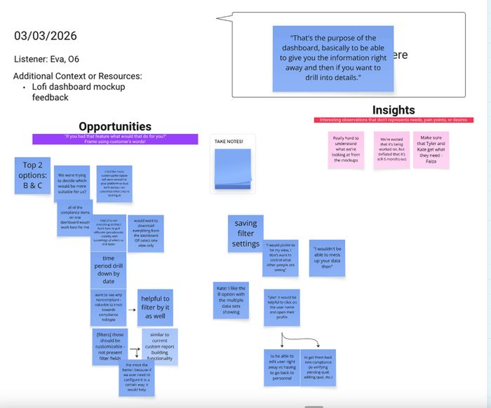
CLICK ANY IMAGE TO ENLARGE
03 DEFINE
Find who's failing, understand why, and fix it, all without leaving the page.
That's the whole job. The old dashboard broke it at every step: you couldn't find the person, couldn't see why, and couldn't do anything from there.
Two kinds of people use this screen. A leader who needs the full picture and a clean number to report upward, and an admin who works the list and fixes things. They need the same loop, at different zoom levels.
“If you want it done right, you have to oversee it.”
“I've got this covered.”
CLICK EITHER CARD FOR THE FULL PERSONA
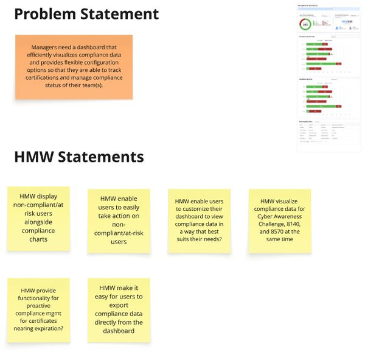
04 IDEATE
When everyone independently arrives at the same idea, it stops being a designer's hunch.
I ran a workshop with our PM, our lead engineer, the CEO, and two people from customer success. Everyone sketched on their own before anyone talked, so nobody just agreed with the loudest person in the room.
Then we sorted features into in-scope and out, wrote down everything we were still guessing at, and ranked those guesses by how risky they were.
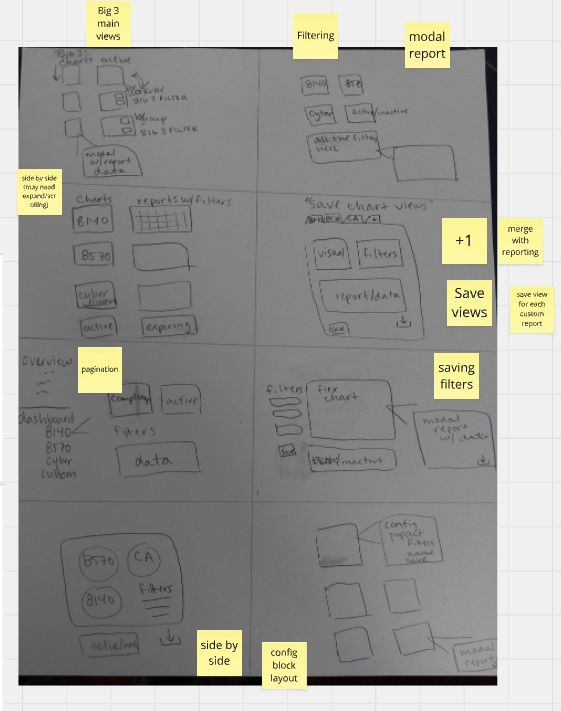
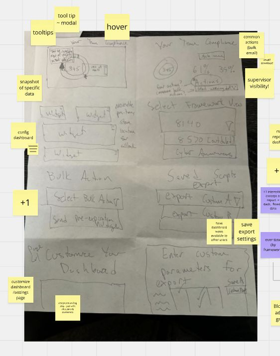
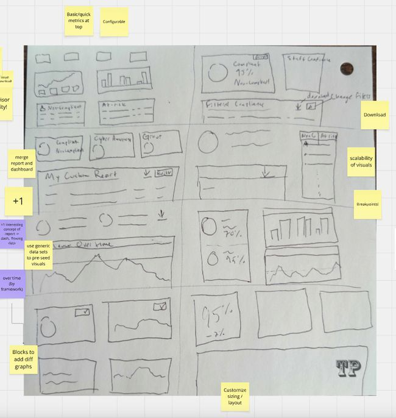
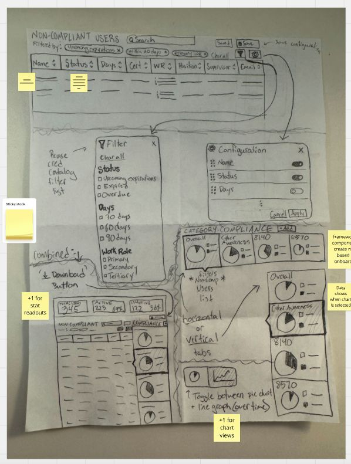
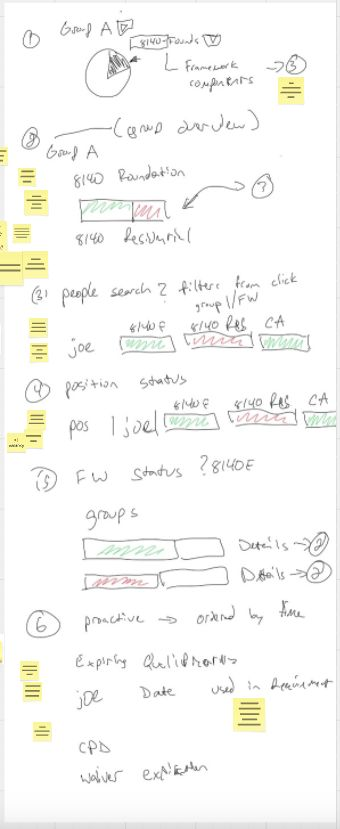
FIVE PEOPLE, FIVE SKETCHES, DRAWN BEFORE ANYONE COMPARED NOTES
Here's how many of the five each idea showed up in:
The riskiest guesses went into the next round of user testing before anyone designed a real screen. Those were the ones that mattered most and had the least proof behind them.
STRONG EVIDENCE
WEAK EVIDENCE
MORE IMPORTANTMORE IMPORTANT · STRONG EVIDENCE
MORE IMPORTANT · WEAK EVIDENCE
LESS IMPORTANT · STRONG EVIDENCE
LESS IMPORTANT · WEAK EVIDENCE
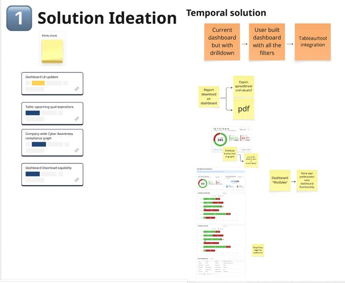
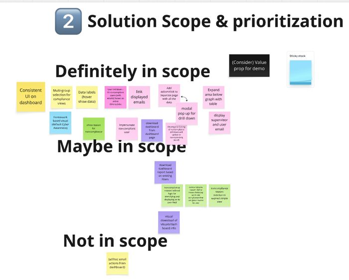
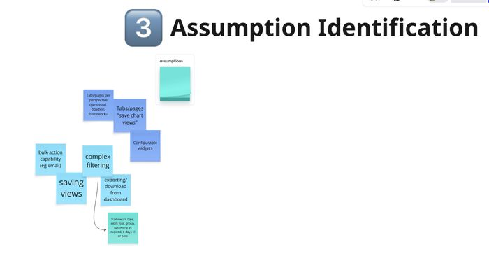
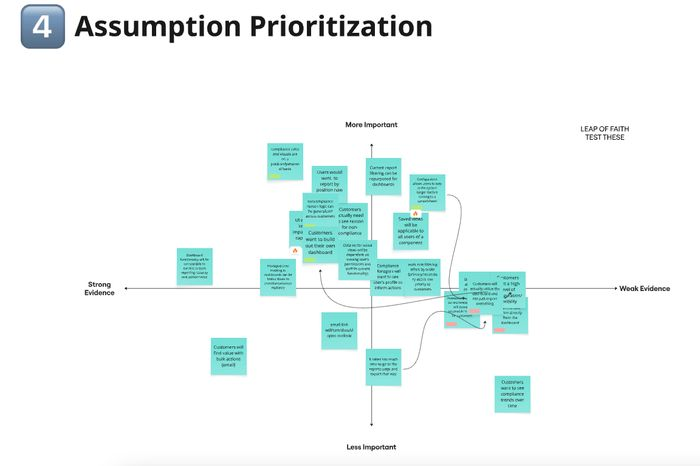
THE WORKSHOP, STEP BY STEP
05 PROTOTYPE & TEST
People are honest about a sketch and polite about a finished screen.
I built three versions in Figma and took them back to the same users. I kept them deliberately unfinished so people would tell me what they really thought instead of complimenting the colors.
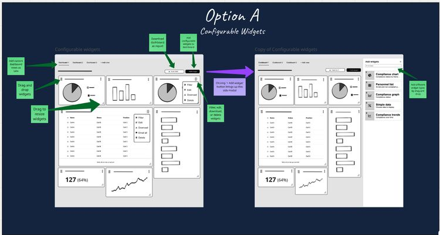
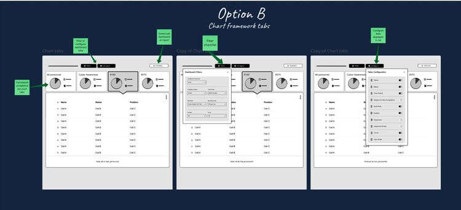
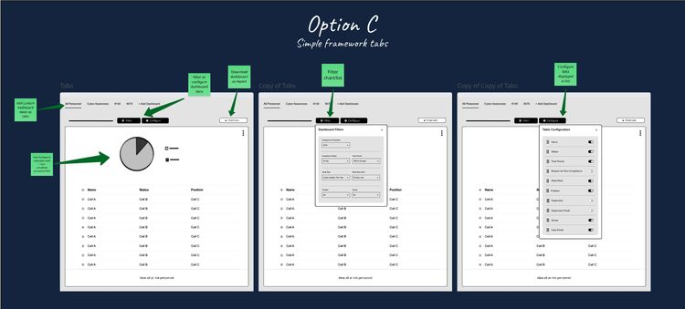
CLICK ANY IMAGE TO ENLARGE
The way we sorted people into compliant and not compliant hid the exact thing managers needed to know.
Two of three groups liked Option A for the long run. All of them said Option B's tabs were the clearest way to drill in. So the final design took both: A's flexibility, B's structure.
But the bigger finding had nothing to do with layout.
The old model had two labels: compliant or not. Users told us that hid the thing that mattered most. Someone can be compliant today and still have work left. They might be waiting on paperwork, covered by a waiver, or still inside their training window. That person is completely different from someone who's finished and has nothing outstanding. Managers need to know which of their people still need a nudge.
So I rebuilt the labels:
Something required is missing. This person needs help now.
Fine today, but there's work left: waiting on paperwork, under a waiver, or still in their training window.
Everything is met. Nothing outstanding.
Combined = tiers 2 and 3 together, the single number managers hand to their boss.
That last one matters more than it looks. Managers report upward to an agency CIO who wants one figure. The three tiers give managers the detail they need day to day; Combined gives them the clean number to report. Both audiences, no compromise.
The first version tested well on layout and still had the wrong model underneath it. Here's the same screen before and after. Switch between them:
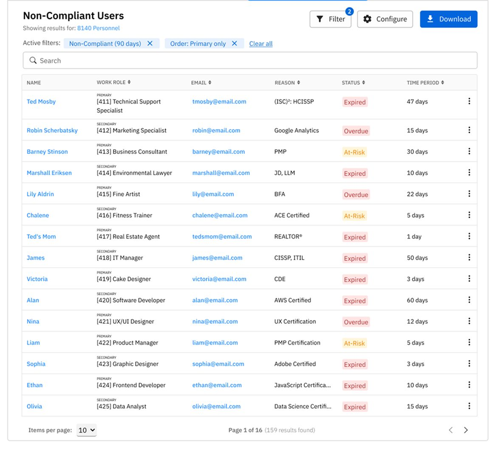
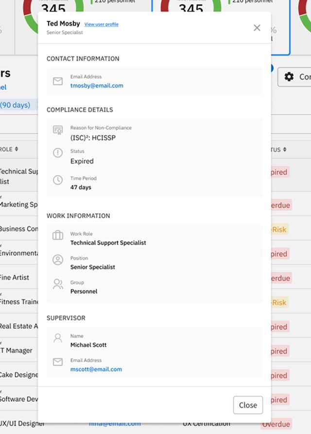
“It would be helpful to click on the user name and open their profile, to be able to edit the user right away vs having to go back to personnel.”
A FEATURE THAT WAS IN NONE OF THE THREE MOCKUPS, AND WENT STRAIGHT INTO SCOPEThat quote is the reason for a second round of testing. Nobody could have asked for that in the abstract. They only said it once they had something concrete in front of them.
Those three tiers show up in the interface as five states. Each one maps to a real situation a manager runs into, instead of forcing their reality into a yes-or-no box:
The qualification deadline has been missed. This person or requirement is outside any active extension, waiver, or exemption.
FOLLOW-UP REQUIREDUnder instruction and within the qualification window, either the 9-month foundational or 12-month residential timeline under DoD 8140.
NO ACTION YET · COUNTS AS COMPLIANTAn approved waiver is covering this requirement. Check the expiry date and plan ahead if renewal will be needed.
NO ACTION WHILE VALID · COUNTS AS COMPLIANTNo qualification matrix has been published for this work role yet. This person is considered compliant in the meantime. The gap is at the program level, not a failure by the individual.
NO ACTION · COUNTS AS COMPLIANTAll requirements for this work role have been met.
NO ACTION NEEDEDEACH STATE WAS SPECIFIED DOWN TO ITS TOOLTIP WORDING AND COLOUR RAMP
06 IMPACT
Fixing the model in Figma cost a few weeks. Fixing it after launch would have meant rebuilding the database underneath it.
The design is in development now. The clearest result so far is what didn't happen: a well-tested design that was quietly built on the wrong foundation never made it to the engineering team.
The most common reaction in testing was relief. Managers said it finally matched how they actually think about the work, moving from “what's the number?” to “who do I need to talk to, and what do they need to do?”
I wasn't designing the best possible dashboard. I was designing the best one six people could actually build.
So the filters reuse what the reports page already runs on. And before I committed to the new status model, I checked with our lead engineer that our existing data could carry it. Otherwise it meant a database migration nobody had time for.
A few ideas got cut. What's left is shipping.
WHAT I TOOK FROM IT
The first version was researched, tested and signed off internally. Testing still caught that the model underneath it didn't match how people think. That's the lesson I keep: validation of the surface isn't validation of the structure.
The other one is about the workshop. Getting five people to sketch alone before talking produced more ideas than I would have had by myself, and it got our CEO's knowledge of this industry into the room in a form I could actually design from.
And the constraint turned out to be a gift. Six developers meant I had to decide what really mattered instead of designing everything and hoping. The result is leaner, and it's getting built.
Chief Information Security Officer · mid career
“If you want it done right, you have to oversee it.”
Molly is meticulous and driven, and she thrives on getting compliance exactly right. Her hands-on style means nothing slips past her, but it also means everything feels urgent at once. She uses Cyberstar to keep control of her agency's compliance posture, leaning on its reports and dashboards. Her standards make her formidable, and occasionally make delegating hard.
Compliance Policy Administrator · mid career
“I've got this covered.”
Claire runs the system day to day and prefers to do it without help. She has strong technical skills and a practical streak, which makes her the person her team relies on. She isn't looking for clever new ways to use Cyberstar. She wants it to work, stay accurate, and stop eating her week.